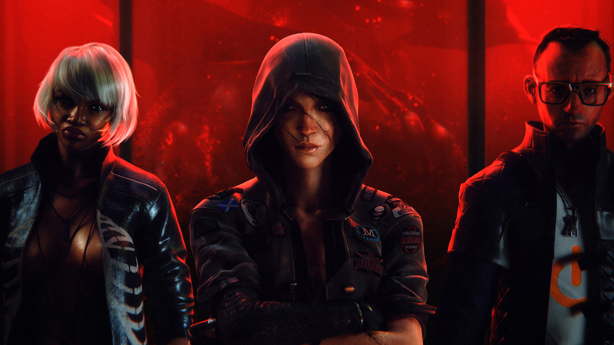
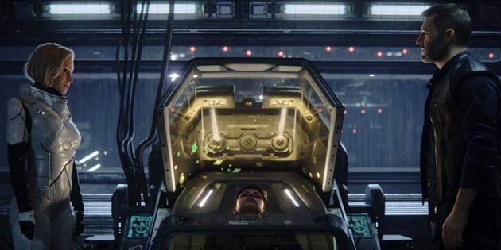
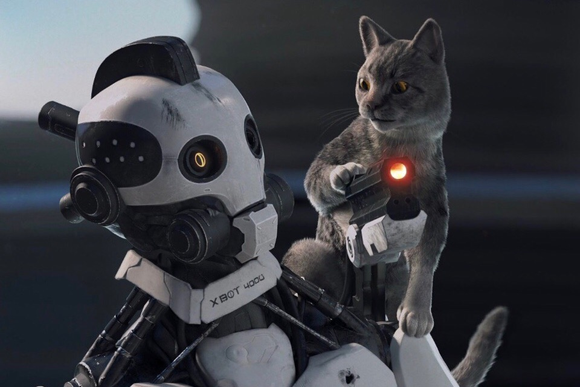

«Любовь, смерть и роботы» (англ. Love, Death & Robots, стилизованный под LOVE DEATH + ROBOTS) — американский анимационный сериал-антология, выпущенный в потоковом сервисе Netflix и состоящий из короткометражных анимационных фильмов разной продолжительности, созданных с расчётом на взрослую аудиторию
ЗДЕСЬ ТАК МНОГО РАЗНЫХ СЮЖЕТНЫХ ЛИНИЙ! Каждая серия - отдельная история. Поэтому это стоит один раз посмотреть самому, чем читать сюжет каждой серии.
  